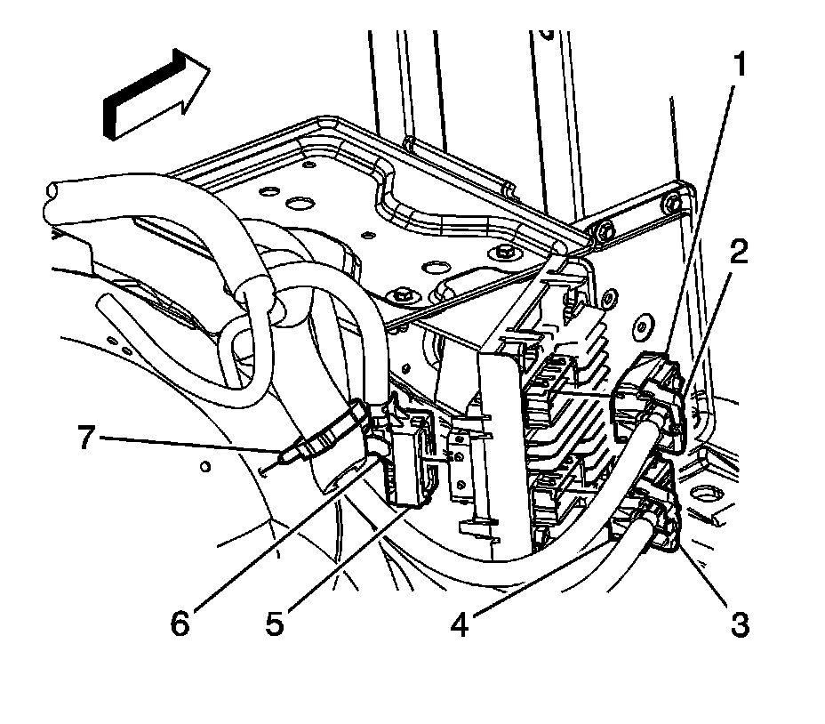
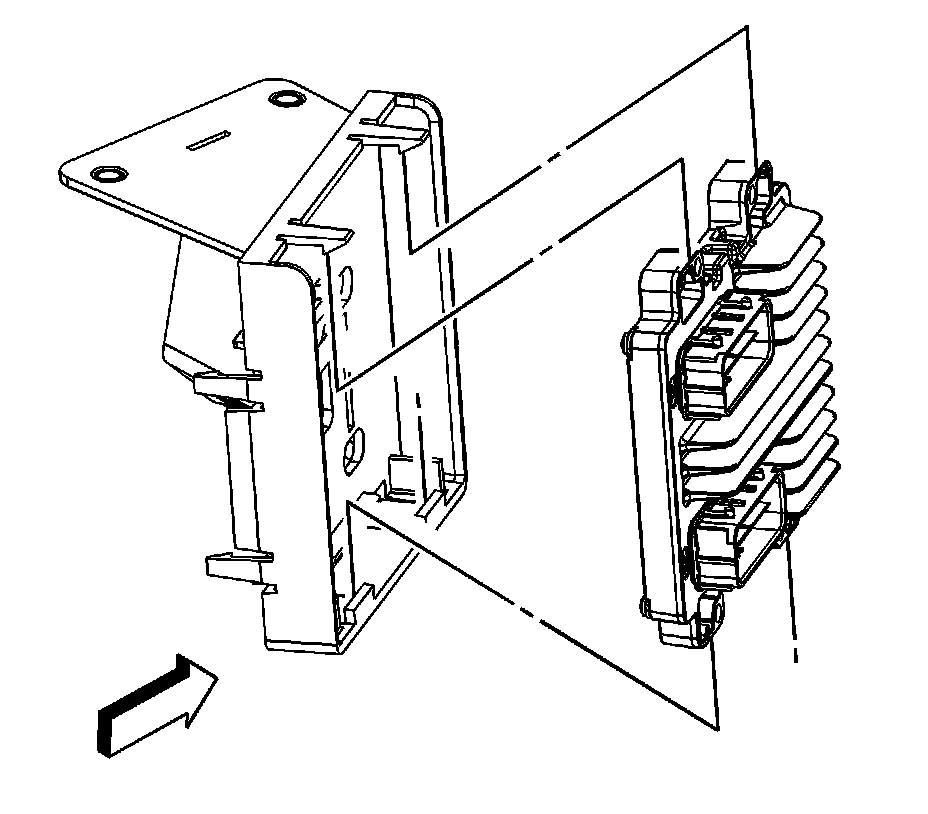

Engine Control Module: Service and Repair
ENGINE CONTROL MODULE REPLACEMENT
Service of the engine control module (ECM) should consist of either replacement of the ECM or programming of the electrically erasable programmable read only memory (EEPROM). If the diagnostic procedures call for the ECM to be replaced, the replacement ECM should be checked to ensure that the correct part is being used. If the correct part is being used, remove the faulty ECM and install the new service ECM.
NOTE:
- Turn the ignition OFF when installing or removing the control module connectors and disconnecting or reconnecting the power to the control module (battery cable, powertrain control module (PCM)/engine control module (ECM)/transaxle control module (TCM) pigtail, control module fuse, jumper cables, etc.) in order to prevent internal control module damage.
- Control module damage may result when the metal case contacts battery voltage. DO NOT contact the control module metal case with battery voltage when servicing a control module, using battery booster cables, or when charging the vehicle battery.
- In order to prevent any possible electrostatic discharge damage to the control module, do no touch the connector pins or the soldered components on the circuit board.
- Remove any debris from around the control module connector surfaces before servicing the control module. Inspect the control module connector gaskets when diagnosing or replacing the control module. Ensure that the gaskets are installed correctly. The gaskets prevent contaminant intrusion into the control module.
- The replacement control module must be programmed.
IMPORTANT: It is necessary to record the remaining engine oil life. If the replacement module is not programmed with the remaining engine oil life, the engine oil life will default to 100 percent. If the replacement module is not programmed with the remaining engine oil life, the engine oil will need to be changed at 5 000 km (3,000 mi) from the last oil change.
Removal Procedure

1. Using a scan tool, retrieve the percentage of remaining engine oil. Record the remaining engine oil life.
2. Disconnect the negative battery cable.
3. Disengage the engine wiring harness upper electrical connector retainer (2) and remove the connector (1) from the ECM.
4. Disengage the engine wiring harness lower electrical connector retainer (3) and remove the connector (4) from the ECM.

5. Disengage the retainer tabs securing the ECM to the bracket.
6. Remove the ECM.
Installation Procedure
1. Install the bottom ECM tabs into the bracket.
2. Push the ECM in securing the ECM to the bracket.
3. Position the engine wiring harness lower electrical connector and engage the retainer (3) securing the lower connector (4) to the ECM.
4. Position the engine wiring harness upper electrical connector and engage the retainer (2) securing the upper connector (1) to the ECM.
5. Connect the negative battery cable.
6. If a NEW ECM was installed, program the ECM. Refer to Control Module References. Programming and Relearning